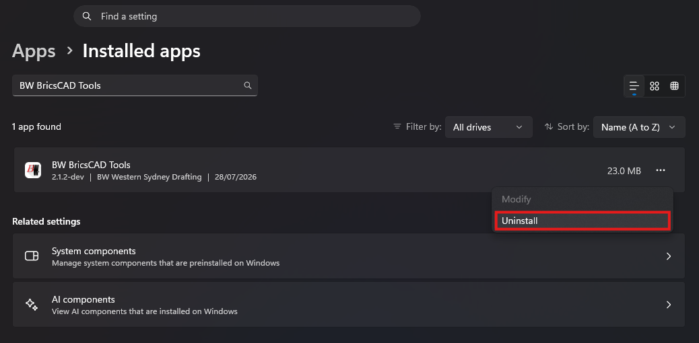

Troubleshooting
For the whole suite — any ribbon tab, any tool. Nearly everything is fixed by reinstalling, so start there and only work down the list if it persists.
Start here: uninstall and reinstall
This fixes most problems, and it is safe: uninstalling reverses exactly what the installer did — it removes the plugins, the office alias it added to your alias file, and any profile it created, and it puts back the profile you were using before. Your drawings are never touched.
- Close BricsCAD. It writes its settings back when it exits, so uninstalling underneath it leaves the old registrations behind.
- Open Windows Settings › Apps › Installed apps, find BW BricsCAD Tools, and choose Uninstall.
- Install it again from the install page — always take the current version rather than an installer you saved earlier.
- Start BricsCAD. The ribbons load themselves.

WSYUPDATE.Errors at startup: “DemandLoad failed due to dependencies problems”
BricsCAD starts with a block of red errors, one per installed tool, like this:
Error loading "C:\Users\…\AppData\Local\Programs\BW Drafting\NSWLotLoader.Loader.dll": .
DemandLoad failed due to dependencies problems!
Application : NSWLotLoader
Description : NSW Cadastral Lot LoaderThis means Windows couldn't load the plugin files at all — none of the suite's code ever ran. The first thing to check, before anything else: does the machine have the Microsoft .NET 8 Desktop Runtime?
BricsCAD V26 changed how it runs plugins: it now needs the .NET 8 Desktop Runtime (x64), which Windows does not include and BricsCAD's installer does not reliably bring. Machines upgraded from V25 usually have it already (something else installed it along the way); a fresh machine or a fresh V26 install usually doesn't — and every tool in the suite fails with exactly this error until it's there.
- Open Windows Settings › Apps › Installed apps and search “desktop runtime” (searching “.NET” will miss it — the entry's name doesn't contain it).
- Look for Microsoft Windows Desktop Runtime – 8.0.x (x64). The 6.x and 10.x entries don't count — it must be the 8.0.x, x64 one.
- If it's missing, install it from Microsoft's .NET 8.0 download page — the .NET Desktop Runtime section, Windows x64 installer. It installs machine-wide, so it will ask for admin approval — if you don't have it, this is a one-line IT request. Then restart BricsCAD.
If the 8.0.x (x64) runtime is installed and the errors persist, work down:
check the install folder still contains the DLLs (reinstall if
not); check Windows Security › Protection history for blocked
files; and compare SECURELOAD and
TRUSTEDPATHS (typed at the BricsCAD command line) against a
working machine.
A ribbon tab is missing
Restart BricsCAD first — ribbons load at startup, and a tab can be missed if BricsCAD was busy. If it is still missing, the usual cause is that the component isn't installed: each ribbon is optional, so a machine set up for Drafting has no BW Engineering tab. Reinstall and tick the discipline you need.
If the tab is still absent after a clean reinstall, the customisation may be holding a
stale menu group. Run CUSTOMIZE, find the group in
Manage Your Customizations and unload it, then restart BricsCAD so the
plugin loads it fresh.
A command says “unknown command”
That part of the suite isn't installed. Everything is optional at install time, so commands only exist if their component was ticked:
| If this fails | You need |
|---|---|
OPENCHECKLIST | The Drawing Checklist component |
NSWLOTS | The NSW Lot Loader component |
PCDIG | The Point Cloud Digitizer component |
OUTLINE / VPO | The Community LISP tools component |
| Engineering or WAE commands | The matching discipline — Engineering or Surveying |
Run the installer again and tick the discipline that carries it. The wizard remembers what you chose last time, so you are adding to your setup, not starting over. For an individual component rather than a whole discipline, tick Advanced on the first page and choose it from the component list.
Lines look wrong — fences and easements draw solid
The linetype file didn't resolve, and the command line will have said so when you drew. Reinstall to restore the Support files.
If it only happens in one drawing, that drawing is missing the linetype rather than the machine — draw the object again with the suite loaded and it will be pulled in.
Plot commands don't produce a PDF
The plot device isn't installed. The engineering and WAE plot commands need the BW plot configurations, which ship with those disciplines — reinstall with Engineering or Surveying ticked.
Text is the wrong size
Text is sized for the sheet, so it depends on the annotation scale that was current when you placed it. If it comes out too large or too small, set the annotation scale first, then place the text.
Still stuck
Send it through the Support & Requests form — or hit Report a Bug on any ribbon tab, which opens the same form. Include the drawing, the command you ran and the exact message from the command line.